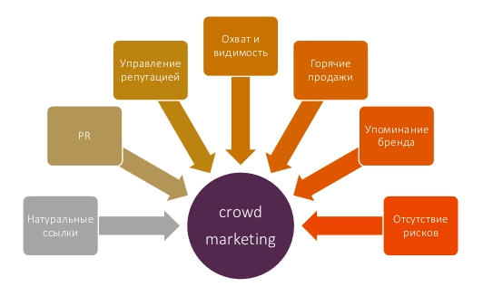
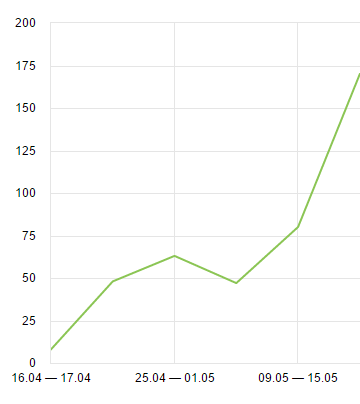
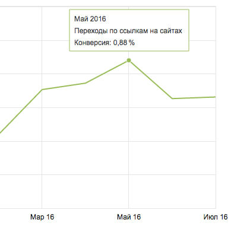
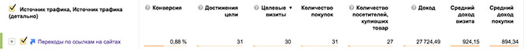
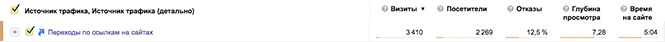

Крауд-маркетинг что это такое и почему он важен?
Вероника Мостовая / 08.02.20164351

В данной статье хотелось бы поговорить с Вами о достаточно интересном способе продвижения, который называется крауд-маркетинг. Кто знает английский, наверное уже догадался, что речь пойдёт о работе с пользователями, так как crowd в переводе с англ. означает — толпа. Но что конкретно под собой подразумевает данный метод? На сколько он важен и даёт ли какие-то результаты?
Заказать услуги крауд маркетинга вы можете, обратившись в веб студию Zwebra по телефонам +38 (098) 455 35 55 и +38 (050) 505 35 35 или отправив запрос с сайта.
Понятие крауд-маркетинга
Крауд-маркетинг — это технология продвижения, целью которой является стимулирование продаж или популяризация бренда, товара или услуги в сети Интернет посредством рекомендаций на форумах, тематических блогах, социальных сетях, опросниках, досках бесплатных объявлений и тд.
Плюсы крауд-маркетинга и что он даёт вашему бизнесу
- Рост продаж
- Рост трафика
- Рост репутации
- Узнаваемость бренда
- Рост позиций в поисковой выдаче
- Обратные ссылки
Актуальность крауд-маркетинга
Так как в последнее время поисковые системы начали ужесточать санкции за покупку ссылок и выпустили «Пингвина» и «Минусинска», подобный способ получения ссылок стал вполне актуальным. Такая стратегия получения ссылок скорее вынужденная мера, к которой все в конечном итоге и так бы пришли.
Да и целый ряд платных инструментов перестали оправдывать вложенные деньги и быть столь эффективными.
Такая обстановка заставляет бизнес самостоятельно вкладывать усилия и время, чтобы найти свою целевую аудиторию и только потом работать с ней.

Кому не стоит начинать заниматься крауд-маркетингом?
Ещё одним положительным моментом данной технологии является, то что она подходит практически всем, чей продукт является предметом широкого пользования, но всё же есть исключения:
- Достаточно узкой бизнес-тематике;
- Различного рода услугам доставки. Либо же нужно очень тщательно отсеивать площадки;
- Большие предприятия, спецоборудование, тяжелая промышленность или просто какой-то сложный продукт с достаточно ограниченной аудиторией. Такая целевая аудитория ищет контакты компании или конкретные предложения, а не отзывы. Да и стороннего исполнителя довольно сложно нанять, так как ему будет довольно сложно в полной мере овладеть темой;
- Владельцам примитивного или неудобного сайта. Дело в том, что даже если на ваш сайт придут пользователи, они с высокой долей вероятности его сразу же покинут. Предварительно нужно заняться сайтом.
Где же стоит искать целевую аудиторию?
Должно быть ясно, что вашей целью должны стать площадки, которые не имеют спама, заслуживают доверия да и вообще имеют множество обсуждений касающихся вашей темы. Не лишними будет хорошие показатели PR и тИЦ. Иными словами, сообщества, форумы, блоги, социальные сети и даже онлайн-СМИ. Если на ресурсе пишут о том, что так или иначе связанно с вашей темой — он вам подходит.
Важные моменты
Определение роли
Следует определится с тем, кем вы будете для пользователей — таким же пользователем или же экспертом. Выбранной роли нужно следовать до конца. В случае, если вы нашли узкотематические сообщества или форумы, есть смысл зарабатывать там авторитет, регулярно общаться с пользователями и очень аккуратно рекламировать свой продукт.
Выделенное время
Нет никакого значения, будете ли вы экспертом или обыкновенным потребителем — вам в любом случае нужно время, чтобы должным образом развить аккаунт. Так или иначе, пользователь хочет увидеть либо отзыв такого же как и он или же очень авторитетное мнение. Обыкновенная реклама воспримется неправильно.
Также нужно учесть, что нужно немало времени и просто для того, чтобы найти площадки, на которых в дальнейшем будут размещаться ссылки. В дальнейшем нужно будет этот список вычищать, оставляя только самые выгодные ресурсы.
О ссылках
Ссылки, которые Вы размещаете, должны выглядеть максимально естественно и разнообразно, что не только улучшит индексацию страниц, но и видимость сайта в органическом поиске (в основном это низкочастотные запросы), а также будет способствовать повышению узнаваемости бренда в сети и может увеличить продажи, за счёт привлечения целевого трафика.
Характеристика крауд-маркетинговых ссылок:
- Большая часть проставляемых ссылок находятся в nofollow.
- Ссылки в основном безанкорные.
- Ссылки с тематических постов и отвечают на вопросы пользователей.
- Все ссылки ставятся вручную, отсутствие любого вида спама.
За такие ссылки никто не будет банить или понижать сайт в выдаче.
Конечная цель крауд-маркетинга
В идеале, конечной целью должен быть не отчет, где огромный список «наштампованных» ссылок, а факт помощи человеку с его проблемой/вопросом и при этом, возможно, оставить очень органичную ссылку. Только при такой работе в большинстве случаев ваши ссылки будут держаться на форумах и их не будут чистить модераторы. Обязательным является принцип помощи пользователю, и только потом размещения ссылки.
Минусы, с которыми можно столкнуться
Подбор площадок для крауд-маркетинга — процесс очень трудоёмкий и времязатратный. Если пренебречь основными правилами раскрутки подобным методом, то эффект будет прямо противоположным!
Данной работой можно заняться лично, нанять фрилансера или заказать услуги крауд-маркетинга в веб-студии. Эта работа требует времени и определенных умений, чего у вас вероятнее всего нет. Если решили заниматься этим "своими руками", есть смысл выступать на форумах сотрудником вашей компании, писать клиентам, благодарить за позитивные отзывы и решать проблемы людей, которые оставили негатив.
При найме фрилансера, с высокой долей вероятности может выйти так, что его придется обучать, указывать на более выгодные для вас площадки и постоянно контролировать качество выполненных работ.
В веб-студии работают специалисты по крауд-маркетингу, которые обладают уже наработанной базой площадок и разместят ваши ссылки только на проверенных источниках. Немаловажным является тот факт, что студия имеет опыт работы с разными видами раскрутки и сможет порекомендовать вам самый эффективный, а постоянная аналитика и контроль статистики позволят грамотно проанализировать стратегию продвижения.
Пример работы крауд-маркетинга:
Для наглядности рассмотрим пример кампании по крауд маркетингу для Интернет магазина детской трикотажной одежды, которую проводила наша студия. Источники для получения дополнительного трафика были выбраны следующие: посты на форумах для мам, комментарии на женских сайтах и в отзовиках, объявления на тематических площадках для оптовых покупателей, СП и дропшипперов.
График ниже показывает, как за месяц увеличилось количество ежедневных просмотров сайта нашего клиента с других сайтов.

В среднем количество переходов в месяц составляет не меньше 50 и может достигать более 200 только с одного ресурса!
После анализа полученных данных из Яндекс e-commerce за несколько месяцев - было видно, что показатель конверсии по крауд маркетингу хоть и не был слишком высоким, но даже при уровне 0,88% приносил неплохой результат.

По данным за май месяц 2016 года было зафиксировано 31 продажи на общую сумму свыше 27 000 грн

Общее количество переходов по ссылкам на сайтах в отчетном месяце составило 3410 со средней длительностью просмотра свыше 5 минут.

Эти цифры позволяют судить о том, что размещенные нами ссылки действительно работают - сайт получает новых посетителей и становится узнаваемым, "прокачиваются" его поведенческие факторы и поисковый вес внешних ссылок. А главное, достигается основная цель - продажи!
В нашем портфеле есть пример, где крауд маркетинг стал основным, недорогим и самым эффективным способом продвижения продукции компании. Тематика: продажа прицепов для легковых автомобилей.
Крауд-маркетинг - цены
И теперь немного о ценах. Стоимость услуги крауд-маркетинга составляет в среднем $6-8 за ссылку. Цена зависит от общего количества ссылок, затраченного времени на выполнение работ, а также от сложности тематики. Обычно исполнитель устанавливает минимальный бюджет на выполнение определенного объема работ в месяц. К примеру, в нашей студии минимальный бюджет составляет $150. Данная услуга доступна только для уже существующих клиентов студии.
Заказать услуги крауд-маркетинга или получить более подробную консультацию по данному методу продвижения можно оставив запрос в разделе «Контакты».
Вы также можете задать вопрос в комментариях к данной статье и мы обязательно на него ответим!